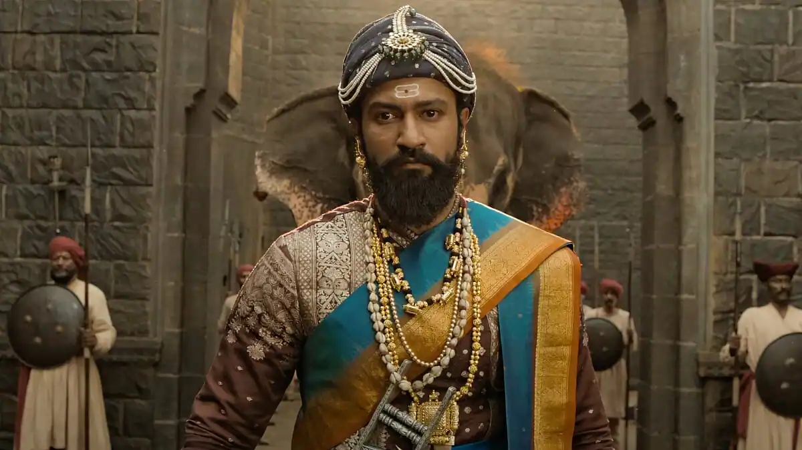

Chhava
Review: "Chhava" is a historical Marathi film that tells the inspiring and emotional story of **Sambhaji Maharaj**, the brave son of Chhatrapati Shivaji Maharaj. The film captures his journey as a fearless warrior, a wise ruler, and a devoted son. It showcases his courage, struggles against the Mughals, and his tragic sacrifice for Swarajya. Visually rich and emotionally powerful, *Chhava* stands out for its strong performances, especially by the lead actors, and its beautiful portrayal of Maratha history.
Rating: ⭐⭐⭐⭐⭐ (5/5)